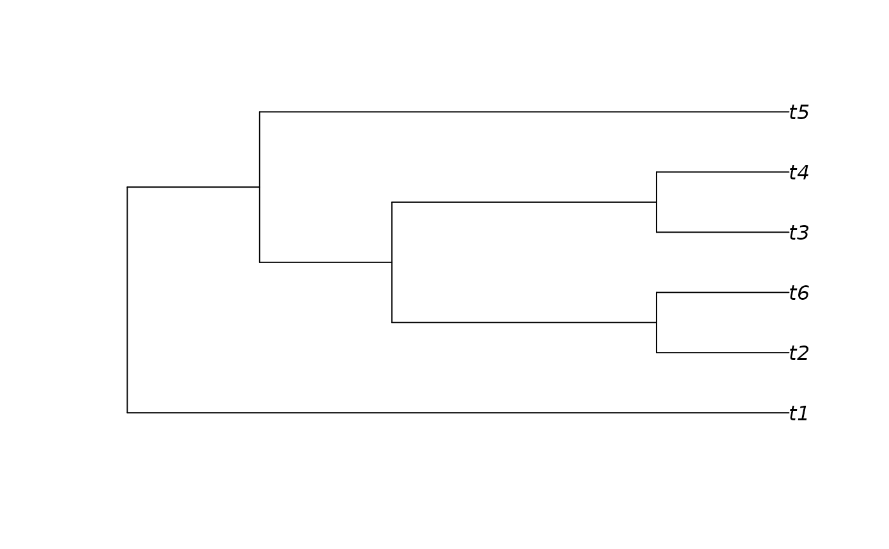
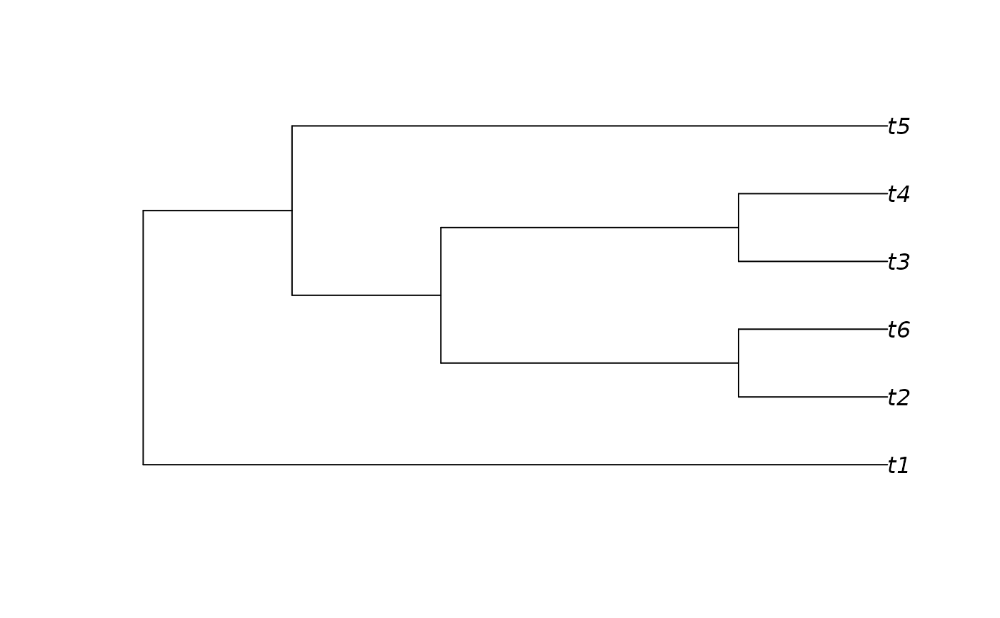

SortTree() sorts each node into a consistent order, so that node rotation
does not obscure similarities between similar trees.
Usage
SortTree(tree, how = "cladesize", order = TipLabels(tree))
# S3 method for class 'phylo'
SortTree(tree, how = "cladesize", order = TipLabels(tree))
# S3 method for class 'list'
SortTree(tree, how = "cladesize", order = TipLabels(tree[[1]]))
# S3 method for class 'multiPhylo'
SortTree(tree, how = "cladesize", order = TipLabels(tree[[1]]))Arguments
- tree
One or more trees of class
phylo, optionally as a list or amultiPhyloobject.- how
Character vector specifying sort method:
"Cladesize"rotates each node such that the larger clade is first, thus appearing lower when plotted;"TipLabels"rotates nodes such that labels listed sooner inorderare listed first, and thus plot lower.- order
Character vector listing tip labels in sequence they should appear on tree. Clades containing a taxon earlier in this list will be listed sooner and thus plot lower on a tree. Taxa not listed in
orderwill be treated as if they were last in the list.
Details
At each node, clades will be listed in tree[["edge"]] in decreasing size
order.
Clades that contain the same number of leaves are sorted in decreasing order of minimum leaf number, so (2, 3) will occur before (1, 4).
As trees are plotted from "bottom up", the largest clades will "sink" to the bottom of a plotted tree.
See also
Preorder() also rearranges trees into a consistent shape,
based on the index of leaves.
sort.multiPhylo() sorts a list of trees stored as a multiPhylo
object.
Other tree manipulation:
AddTip(),
CollapseNode(),
ConsensusWithout(),
DropTip(),
ImposeConstraint(),
KeptPaths(),
KeptVerts(),
LeafLabelInterchange(),
MakeTreeBinary(),
Renumber(),
RenumberTips(),
RenumberTree(),
RootTree(),
Subtree(),
TipTimedTree(),
TrivialTree
Examples
messyTree <- as.phylo(10, 6)
plot(messyTree)
 sorted <- SortTree(messyTree)
plot(sorted)
ape::nodelabels()
ape::edgelabels()
ape::tiplabels(adj = c(2, 1/3))
sorted <- SortTree(messyTree)
plot(sorted)
ape::nodelabels()
ape::edgelabels()
ape::tiplabels(adj = c(2, 1/3))
 plot(SortTree(messyTree, how = "tip"))

plot(SortTree(messyTree, how = "tip"))
